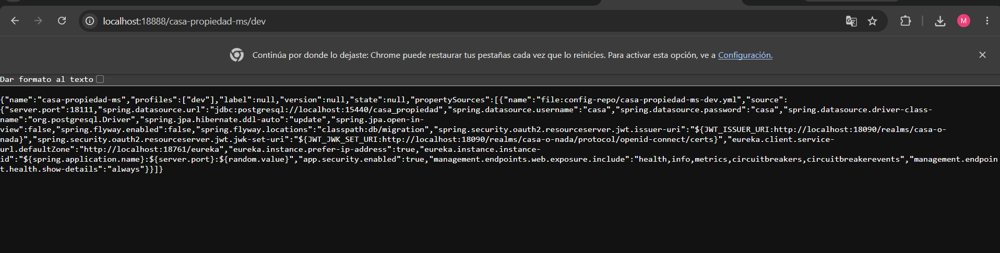

S07 · Seguridad distribuida y control de acceso¶
Tarea 2 — JWT¶
Datos de la actividad¶
| Campo | Información |
|---|---|
| Grupo | 9 |
| Ciclo | V |
| Integrantes | Alanguia Japura Miguel Angel · Jannys Graciela Navarro Acrota · Olger Meza Rupa |
| Proyecto | CASA O NADA |
| Tema | JWT + Keycloak + Spring Security |
1. Resumen de la actividad¶
La segunda tarea protege la arquitectura distribuida mediante JWT. Keycloak actúa como proveedor de identidad y emite tokens firmados. Los servicios validan el emisor y las claves del token mediante Spring Security OAuth2 Resource Server. Los roles incluidos en el JWT permiten diferenciar las operaciones autorizadas para CLIENTE y AGENTE.
2. Arquitectura de seguridad¶
Usuario
│ credenciales
▼
Keycloak
│ JWT firmado
▼
Gateway / microservicios
│ valida issuer + firma + roles
├── autorizado → recurso
└── no autorizado → 401 / 403
3. Configuración centralizada del Resource Server¶
La configuración de seguridad se obtiene desde Config Server. En ella se definen el issuer-uri y el jwk-set-uri del realm casa-o-nada.
Evidencia 01 · Configuración JWT de propiedad-ms¶

Descripción. La respuesta de Config Server para casa-propiedad-ms/dev incluye spring.security.oauth2.resourceserver.jwt.issuer-uri y jwk-set-uri apuntando al realm casa-o-nada de Keycloak. También se observan la configuración de Eureka, PostgreSQL y los endpoints de Actuator.
4. Infraestructura protegida y saludable¶
La seguridad se integró sin perder observabilidad ni descubrimiento de servicios.
Evidencia 02 · Gateway en estado UP¶

Descripción. El endpoint de Actuator del Gateway devuelve UP y muestra los servicios descubiertos por Eureka. Esto confirma que la incorporación de seguridad no impide el funcionamiento de la infraestructura distribuida.
Evidencia 03 · Microservicios disponibles en Eureka¶

Descripción. Eureka mantiene registrados Gateway, Propiedad y Reserva en estado UP. Esta evidencia complementa la prueba de seguridad al confirmar que las solicitudes protegidas se ejecutan sobre servicios activos.
5. Obtención del JWT¶
Se solicitó un token al endpoint OpenID Connect de Keycloak utilizando el cliente casa-o-nada-web. El token obtenido corresponde al usuario cliente y contiene el rol CLIENTE.
username: cliente
role: CLIENTE
issuer: http://localhost:18090/realms/casa-o-nada
La prueba automatizada leyó correctamente la identidad y los roles del JWT y devolvió HTTP 200.
6. Pruebas de autenticación y autorización¶
El script test-s06-s07.ps1 comprobó distintos escenarios de seguridad.
| Prueba | Resultado | Interpretación |
|---|---|---|
| Identidad y roles obtenidos desde JWT | 200 |
Token válido |
| Recurso protegido sin token | 401 |
Falta autenticación |
CLIENTE intenta crear propiedad |
403 |
Autenticado, pero sin permiso |
AGENTE crea una propiedad |
201 |
Rol autorizado |
6.1 HTTP 401 — sin autenticación¶
Una petición a un recurso protegido sin enviar Authorization: Bearer <token> fue rechazada con 401. Esto demuestra que el recurso no puede utilizarse de forma anónima.
6.2 HTTP 403 — autenticado pero sin rol suficiente¶
El usuario cliente obtuvo un JWT válido, pero al intentar crear una propiedad recibió 403. El sistema reconoce al usuario, pero el rol CLIENTE no posee autorización para esa operación.
6.3 HTTP 201 — operación autorizada¶
Con un token correspondiente al rol AGENTE, la creación de una propiedad fue aceptada y devolvió 201. La propiedad de prueba quedó registrada con datos como título, ciudad, precio, habitaciones y agente asociado.
7. Diferencia entre 401 y 403¶
- 401 Unauthorized: la solicitud no presenta una autenticación válida.
- 403 Forbidden: el usuario sí está autenticado, pero no tiene el rol o permiso necesario.
Esta diferencia fue comprobada directamente durante las pruebas.
8. Reproducción técnica¶
- Levantar Keycloak en
localhost:18090. - Verificar el realm
casa-o-nada. - Levantar Config Server, Eureka, Gateway y microservicios.
- Solicitar un token para el usuario de prueba.
- Ejecutar
scripts/test-s06-s07.ps1. - Verificar
200para identidad válida. - Verificar
401al omitir el token. - Verificar
403cuandoCLIENTEintenta crear una propiedad. - Verificar
201cuandoAGENTErealiza la operación autorizada.
9. Reflexión técnica¶
JWT permite que cada petición transporte la identidad y los roles necesarios para tomar decisiones de autorización sin mantener una sesión tradicional en cada microservicio. Keycloak centraliza la identidad y Spring Security valida el token en los componentes protegidos.
10. Preguntas de defensa¶
| Pregunta | Respuesta |
|---|---|
| ¿Qué es JWT? | Un token firmado que transporta información de identidad y autorización. |
| ¿Quién emite el token? | Keycloak, desde el realm casa-o-nada. |
| ¿Qué valida el Resource Server? | La firma, el emisor, vigencia y datos necesarios del token. |
| ¿Por qué se obtuvo 401? | Porque se intentó acceder sin un token válido. |
| ¿Por qué se obtuvo 403? | Porque el usuario estaba autenticado, pero su rol no permitía la operación. |
| ¿Qué demuestra el 201 del AGENTE? | Que la autorización por rol permitió crear la propiedad. |